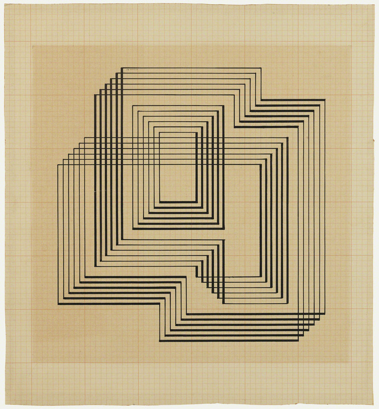

Josef Albers
Josef Albers was born in Bottrop Germany and started his career as a schoolteacher from 1908 to 1913. His most prominent contribution is his 1963 book Interaction of Color which provided the most comprehensive analysis of the function and perception of color to date and profoundly influenced art education and artistic practice, especially Color Field Painting and Minimalism, in the 20th century. He produced his first Homage to the Square in 1949 and continued to work on the series until his death. He used a single geometric shape to systematically explore the vast range of visual effects that could be achieved through color and spatial relationships alone.
